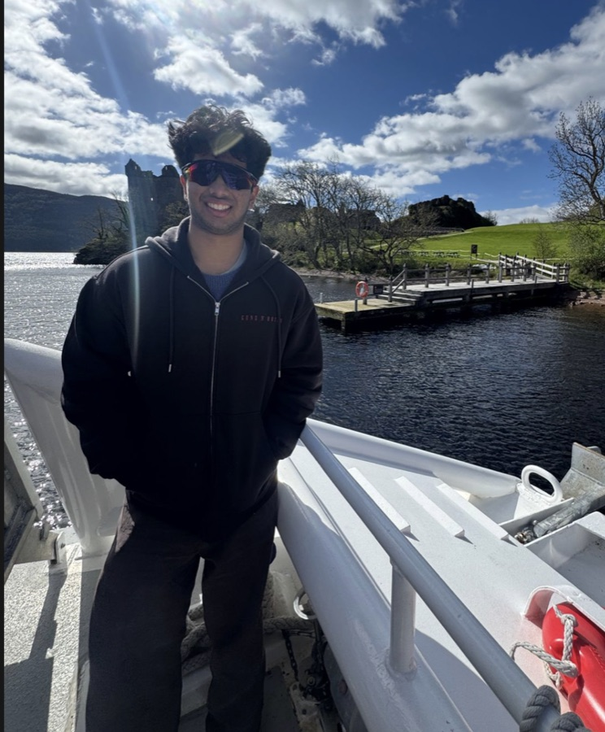

State Bank of India
Banking expertise and service access
SBI has been instrumental in facilitating our banking access programs, connecting previously unbanked individuals with formal financial services.

About Project Thrive
A youth-led nonprofit founded in 2024 to bring financial literacy and inclusion to underserved communities across Bengaluru.
Our story
“It all began with a simple observation…” Aarin, the founder of Project Thrive, noticed his mother paying their housemaid’s salary in cash. When he asked why, she explained that the housemaid did not have a bank account.
This revelation was striking — it highlighted the reality faced by many domestic workers in India who have never stepped into a bank, used an ATM, or transacted with a bank account.
Countless individuals in underserved communities lack access to basic financial tools that many take for granted. Without such tools, they remain excluded from opportunities that could help them save, grow, and secure their futures.
With a mission to bridge this gap, Aarin founded Project Thrive — a nonprofit initiative dedicated to promoting financial literacy and inclusion. Through workshops, camps, and partnerships with like-minded organizations, we give people the knowledge and tools they need to thrive financially.
What started as a single moment of insight has grown into a movement, and we continue to work so that everyone has the opportunity to take charge of their financial future.

Our mission
We envision a society where financial knowledge is not a privilege but a right.
We are committed to breaking down the barriers that separate institutional finance from everyday citizens, creating bridges that empower individuals to participate fully in economic opportunities previously beyond their reach.
Through education, inclusion, and sustained support, we are building resilient communities where economic dignity and opportunity flourish regardless of background.

Understanding the gap
While states like Kerala and Karnataka show over 90% bank account penetration, states like Gujarat show significant gaps between rural and urban populations. The persistent rural–urban divide represents millions of families excluded from basic banking — the foundation of financial security.
Simply having a bank account is just the first step; true financial inclusion requires understanding how to use these tools effectively. Our programs make sure access to banking becomes genuine financial empowerment.

Founder · The vision behind Project Thrive
Founder · Student at NPS Indiranagar
A dedicated student at NPS Indiranagar, Aarin embodies the transformative potential of youth leadership in addressing complex social challenges. Passionate about cricket, he brings the same strategic thinking and team-oriented approach from sports to social initiatives.
At the heart of Aarin’s work is a fundamental belief that financial literacy should be accessible to all. Through Project Thrive, he demonstrates how youth-led initiatives can create meaningful change in communities where financial knowledge has traditionally been scarce.
Our methodology
Our evidence-based approach to creating lasting financial empowerment.
We demystify financial concepts, translating complex information into accessible knowledge in 5 languages.
Hands-on workshops and mentorship cultivate financial confidence that transcends generations.
Creating pathways that connect underserved communities with essential financial resources.
Measuring success through tangible outcomes: reduced vulnerability, increased savings, empowered communities.
Our partners
Banking expertise and service access
SBI has been instrumental in facilitating our banking access programs, connecting previously unbanked individuals with formal financial services.
Enabling community connections
ACT has provided crucial implementation support, helping us build meaningful connections within communities and address local needs.
Grassroots outreach
Sampark’s grassroots presence extends our financial literacy work to communities that might otherwise remain underserved.
Our leadership
From partnerships to camp logistics — the people who make every session possible. Meet the full roster on the team page.
Owner · Ops & Logistics
Head of Marketing
Head of Partnerships
Head of Volunteer Training
Join our mission
Transforming lives through financial literacy and inclusion — with you.